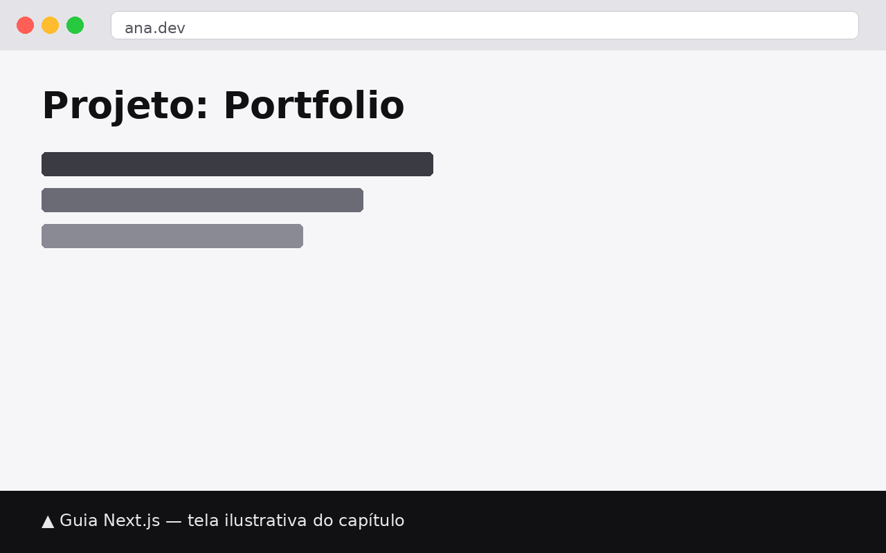

Projeto: Portfólio com PPR e imagens otimizadas
A Ana é designer e quer um portfólio que carregue na hora no celular: o "oi, eu sou a Ana" (hero) sai do cache instantaneamente, os projetos (que vêm de uma API e podem mudar) entram por streaming logo depois, e todas as fotos passam pelo next/image — sem pulo de layout, em WebP, no tamanho da tela.
- Estrutura:
app/page.jsx(hero estático) +<Suspense>com a lista de projetos - PPR incremental:
experimental_ppr = truena home → shell estático + ilhas dinâmicas - Galeria com
<Image fill sizes>dentro de containers com altura fixa (zero CLS) next/font/localcom a fonte própria dela (offline-safe no build)generateMetadatacom OpenGraph (a pré-visualização bonita ao compartilhar o link)
A ideia: a vitrine de tráfico rápido com estoque nos fundos
O portfólio da Ana é uma vitrine: a parte de cima — foto dela, nome, "designer & front-end" — é igual para todo visitante e fica pré-renderizada no cache (com PPR, esse shell sai na hora). Os projetos, que vêm de uma API e podem mudar, ficam nos fundos: o servidor busca depois e manda por streaming para dentro do Suspense. As fotos da vitrine são todas com <Image>: o espaço já está reservado, então a página não pula enquanto carrega — o celular agradece.
Passo 1 — estrutura, fonte própria e hero estático
npx create-next-app@latest portfolio-ana cd portfolio-ana mkdir -p public/fonts app/projetos components
import localFont from 'next/font/local';
import './globals.css';
// fonte própria, baixada no build e servida do próprio servidor (offline-safe)
const minhaFonte = localFont({
src: '../public/fonts/MinhaFonte.woff2',
variable: '--font-ana',
display: 'swap',
});
export const metadata = {
title: { default: 'Ana — Designer & Front-end', template: '%s | Ana' },
description: 'Portfólio da Ana: projetos de design e desenvolvimento web.',
openGraph: {
title: 'Ana — Designer & Front-end',
description: 'Projetos, estudos de caso e contato.',
images: ['/og.png'], // 1200×630 em public/og.png
},
};
export default function RootLayout({ children }) {
return (
<html lang="pt-BR" className={minhaFonte.variable}>
<body>{children}</body>
</html>
);
}
import Image from 'next/image';
import { Suspense } from 'react';
import ListaProjetos from '@/components/ListaProjetos';
export const experimental_ppr = true; // PPR incremental: shell estático + ilhas dinâmicas
export default function Home() {
return (
<main>
{/* HERO ESTÁTICO — igual para todos, servido do cache na hora */}
<section style={{ textAlign: 'center', padding: '80px 16px' }}>
<Image src="/ana.jpg" alt="Foto da Ana" width={160} height={160} priority style={{ borderRadius: '50%' }} />
<h1>Oi, eu sou a Ana 👋</h1>
<p>Designer & desenvolvedora front-end. Aqui estão meus projetos.</p>
</section>
{/* PROJETOS DINÂMICOS — vêm da API, entram por streaming dentro do Suspense */}
<Suspense fallback={<p style={{ textAlign: 'center' }}>⏳ Carregando projetos…</p>}>
<ListaProjetos />
</Suspense>
</main>
);
}
Passo 2 — projetos vindos da API (ilha dinâmica)
import Image from 'next/image';
import Link from 'next/link';
async function getProjetos() {
const res = await fetch('https://api.exemplo.com/projetos', { cache: 'no-store' });
// await new Promise(r => setTimeout(r, 2500)); // teste: simula API lenta
return res.json();
}
export default async function ListaProjetos() {
const projetos = await getProjetos(); // suspende aqui: o fallback do Suspense aparece
return (
<section style={{ display: 'grid', gridTemplateColumns: 'repeat(auto-fill, minmax(280px, 1fr))', gap: 16, padding: 16 }}>
{projetos.map(p => (
<Link key={p.slug} href={`/projetos/${p.slug}`}>
<div style={{ position: 'relative', width: '100%', height: 200 }}>
<Image src={p.capa} alt={p.titulo} fill sizes="(max-width: 768px) 100vw, 400px" style={{ objectFit: 'cover', borderRadius: 8 }} />
</div>
<h3>{p.titulo}</h3>
<p>{p.resumo}</p>
</Link>
))}
</section>
);
}
Passo 3 — página do projeto com galeria otimizada
import Image from 'next/image';
import { notFound } from 'next/navigation';
export async function generateStaticParams() {
const res = await fetch('https://api.exemplo.com/projetos');
const projetos = await res.json();
return projetos.map(p => ({ slug: p.slug }));
}
export const revalidate = 300; // ISR: 5 min
export async function generateMetadata({ params }) {
const { slug } = await params;
const res = await fetch(`https://api.exemplo.com/projetos/${slug}`);
if (!res.ok) return {};
const p = await res.json();
return { title: p.titulo, description: p.resumo, openGraph: { images: [p.capa] } };
}
export default async function Projeto({ params }) {
const { slug } = await params;
const res = await fetch(`https://api.exemplo.com/projetos/${slug}`, { next: { revalidate: 300 } });
if (!res.ok) notFound();
const p = await res.json();
return (
<article style={{ maxWidth: 800, margin: '0 auto', padding: 16 }}>
<h1>{p.titulo}</h1>
<div style={{ position: 'relative', width: '100%', height: 400 }}>
<Image src={p.capa} alt={p.titulo} fill priority sizes="(max-width: 800px) 100vw, 800px" style={{ objectFit: 'cover' }} />
</div>
<div dangerouslySetInnerHTML={{ __html: p.conteudoHtml }} />
<h2>Galeria</h2>
<div style={{ display: 'grid', gridTemplateColumns: '1fr 1fr', gap: 8 }}>
{p.galeria.map((foto, i) => (
<div key={i} style={{ position: 'relative', width: '100%', height: 220 }}>
<Image src={foto} alt={`${p.titulo} — foto ${i + 1}`} fill sizes="(max-width: 800px) 50vw, 400px" style={{ objectFit: 'cover', borderRadius: 8 }} />
</div>
))}
</div>
</article>
);
}

Missão: no código, a lista de projetos está solta — se a API demorar, a página inteira trava. Envolva <Projetos /> em <React.Suspense fallback={…}> com um fallback de "carregando…" (é o mesmo mecanismo do PPR/streaming). Rode e clique em Verificar missão.
function Projetos() {
const P = React.lazy(() => new Promise(res => setTimeout(() =>
res({ default: () => <p>🖼️ 6 projetos carregados!</p> }), 2000)));
return <P />;
}
function App() {
return (
<main>
<h1>👋 Oi, eu sou a Ana</h1>
<p>✅ hero aparece na hora (estático)</p>
{/* TODO: <React.Suspense fallback={<p>⏳ carregando projetos…</p>}> */}
<Projetos />
</main>
);
}function Projetos() {
const P = React.lazy(() => new Promise(res => setTimeout(() =>
res({ default: () => <p>🖼️ 6 projetos carregados!</p> }), 2000)));
return <P />;
}
function App() {
return (
<main>
<h1>👋 Oi, eu sou a Ana</h1>
<p>✅ hero aparece na hora (estático)</p>
<React.Suspense fallback={<p>⏳ carregando projetos…</p>}>
<Projetos />
</React.Suspense>
</main>
);
}Quando dá errado
fill dentro de um container sem altura (o position: relative sem height deixa o espaço zerado até a foto chegar):CLS: 0.31 — elemento deslocado: <div style="position:relative"> sem height → sempre defina altura no container (height: 220px) OU use width/height na imagem
export const experimental_ppr = true entram no PPR — e partes que leem cookies()/headers() fora do Suspense derrubam o shell inteiro para dinâmico:Route / rendered dynamically: used `cookies` outside Suspense with PPR → envolva a leitura dinâmica em <Suspense> para preservar o shell estático
Exercícios
No PPR, o hero (igual para todos) deve ficar:
Para a galeria não causar layout shift, cada foto com fill precisa de:
A pré-visualização bonita ao compartilhar o link (título + imagem) vem de:
Complete o opt-in de PPR na página:
Complete a prop da imagem que ocupa o container inteiro: